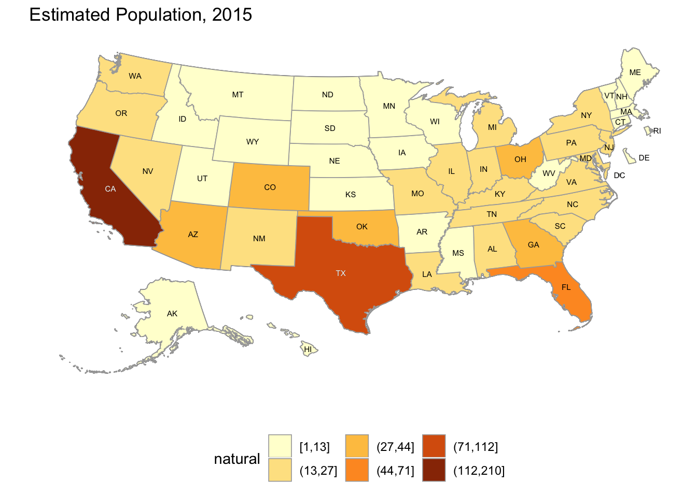
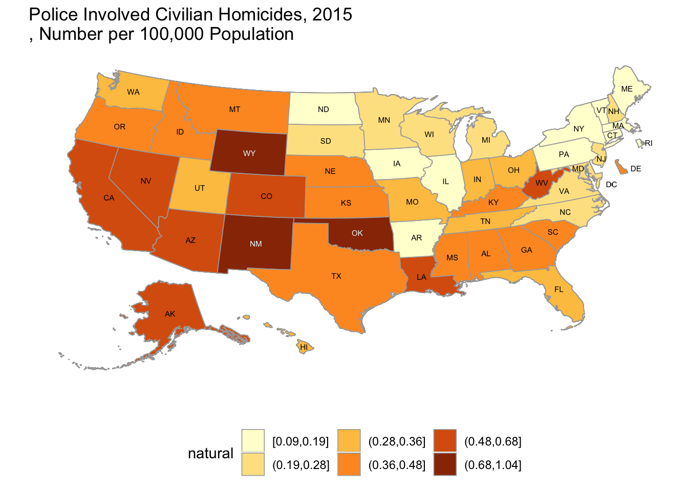

7 2015 Police Involved Homicides
Keywords: Descriptive statistics, R, Census API, geocoding, thematic mapping
7.1 Introduction
Police involved civilian homicides in the United States is the subject of a series published by The Guardian, The Counted, which compiles media reports of homicides resulting from police encounters in the United States. You can explore the data interactively at their interactive page. The data version used in this chapter is dated 2016-06-30.
7.2 The Data
The Counted information on 2015 police involved civilian homicides report that the deaths in 2015 represent 1,146 of the current population of the United States, approximately 320,000,000, a vanishingly small percentage. As a percentage of all homicides in 2014, the deaths represent approximately 6.92%. See Health, United States, 2015 - Individual Charts and Tables: Spreadsheet, PDF, and PowerPoint files, Table 17.
The Counted data layout in in CSV (comma separated value form) is:
| uid | year |
| name | streetaddress |
| age | city |
| gender | state |
| raceethnicity | classification |
| month | lawenforcementagency |
| day | armed |
Classification" is the cause of death and “armed” is whether or how the civilian was armed.
7.3 Tabular summary of the data
7.3.1 Gender
Approximately 95 percent of deaths were men. Gender of one death was reported as “non-conforming,” possibly representing the delays involved in revising reporting systems to account for transgendered citizens.
| Female | 4.62 |
| Male | 95.29 |
| Non-conforming | 0.09 |
7.3.2 Race/Ethnicity
White deaths are under-represented compared to the national population. White, non-Hispanic population in 2014 was 62.2%. Census Projections
| Arab-American | 0.35 |
| Asian/Pacific Islander | 2.09 |
| Black | 26.70 |
| Hispanic/Latino | 17.02 |
| Native American | 1.13 |
| Other | 0.09 |
| Unknown | 1.92 |
| White | 50.70 |
7.3.3 Age
Deaths were of all ages. The youngest death was 5 and the oldest, 85. The median age of death (half older and half younger) was 47.5, and the mean (average) age of death was approximately 47.
| 5 | 0.09 |
| 15 | 5.15 |
| 20 | 12.91 |
| 25 | 16.06 |
| 30 | 15.45 |
| 35 | 12.74 |
| 40 | 8.38 |
| 45 | 9.86 |
| 50 | 7.33 |
| 55 | 5.41 |
| 60 | 3.58 |
| 65 | 1.22 |
| 70 | 0.61 |
| 75 | 0.61 |
| 80 | 0.09 |
| 85 | 0.17 |
| NA | 0.35 |
7.3.4 Cause of Death
Gunshots are the leading cause of deaths in police involved civilian homicides, representing 88.92% of all deaths in The Counted dataset.
7.3.5 Whether and how civilians were armed
Civilian firearms were the most common category involved, but unarmed civilians were the next most common, representing 48.34% and 19.98% of all deaths, respectively.
| Disputed | 0.35 |
| Firearm | 48.34 |
| Knife | 13.44 |
| No | 19.98 |
| Non-lethal firearm | 4.01 |
| Other | 5.41 |
| Unknown | 4.62 |
| Vehicle | 3.84 |
7.3.6 Location
More deaths occurred in California than in any other state, representing 18.32% of all deaths, which is disproportionately higher than its national share of population, 12.07%. American Fact Finder
| AK | 0.44 |
| AL | 1.66 |
| AR | 0.44 |
| AZ | 3.84 |
| CA | 18.32 |
| CO | 2.79 |
| CT | 0.35 |
| DC | 0.61 |
| DE | 0.35 |
| FL | 6.20 |
| GA | 3.40 |
| HI | 0.44 |
| IA | 0.44 |
| ID | 0.70 |
| IL | 2.01 |
| IN | 1.83 |
| KS | 0.96 |
| KY | 1.66 |
| LA | 2.36 |
| MA | 0.87 |
| MD | 1.48 |
| ME | 0.17 |
| MI | 1.75 |
| MN | 1.13 |
| MO | 1.92 |
| MS | 1.05 |
| MT | 0.35 |
| NC | 2.27 |
| ND | 0.09 |
| NE | 0.79 |
| NH | 0.26 |
| NJ | 2.09 |
| NM | 1.83 |
| NV | 1.66 |
| NY | 2.27 |
| OH | 3.23 |
| OK | 3.23 |
| OR | 1.48 |
| PA | 2.09 |
| RI | 0.09 |
| SC | 1.83 |
| SD | 0.17 |
| TN | 1.83 |
| TX | 9.77 |
| UT | 0.87 |
| VA | 1.92 |
| VT | 0.09 |
| WA | 2.01 |
| WI | 1.05 |
| WV | 1.05 |
| WY | 0.52 |
7.3.7 Months and Days of Death
Nationally, deaths were spread approximately evenly among months, days of the week, days of the month and phases of the moon. There was at least one death on 342 days of the year, 93.7% of all days. The median number of deaths per day was 3, and the mean number of deaths was slightly larger, 3.35. On 7 days, there were 8 deaths.
| 2015-03-27 | 8 |
| 2015-04-21 | 8 |
| 2015-09-21 | 8 |
| 2015-10-15 | 8 |
| 2015-10-24 | 8 |
| 2015-12-14 | 8 |
| 2015-12-21 | 8 |
June had the fewest deaths, 80, 6.98%, and July had the most deaths, 124, 10.82%.
| January | 7.94 |
| February | 7.16 |
| March | 9.86 |
| April | 8.90 |
| May | 7.50 |
| June | 6.98 |
| July | 10.82 |
| August | 8.90 |
| September | 8.46 |
| October | 7.94 |
| November | 7.33 |
| December | 8.20 |
The day of the month with the fewest deaths was day 31, and the day of the month with the most deaths was day 21.
| 1 | 2.36 | 9 | 3.66 | 17 | 4.10 | 25 | 2.97 |
| 2 | 2.88 | 10 | 3.32 | 18 | 2.18 | 26 | 3.05 |
| 3 | 3.32 | 11 | 3.14 | 19 | 2.79 | 27 | 3.23 |
| 4 | 3.23 | 12 | 3.23 | 20 | 3.14 | 28 | 3.05 |
| 5 | 3.66 | 13 | 3.32 | 21 | 4.89 | 29 | 2.71 |
| 6 | 4.10 | 14 | 3.58 | 22 | 3.66 | 30 | 2.88 |
| 7 | 2.71 | 15 | 4.10 | 23 | 3.40 | 31 | 1.57 |
| 8 | 3.58 | 16 | 3.23 | 24 | 2.97 | NA | NA |
The day of the week with the fewest deaths was Sunday, 12.57%, and the day of the month with the most deaths was Wednesday, 15.88%.
| Monday | 13.96 |
| Tuesday | 14.92 |
| Wednesday | 15.88 |
| Thursday | 15.01 |
| Friday | 14.75 |
| Saturday | 12.91 |
| Sunday | 12.57 |
Folk wisdom attributes increased crime and other aberations to the full moon; see Lunacy and the Full Moon. However, deaths are approximately evenly distributed over the phases of the moon.
| New | 25.48 |
| Waxing | 24.87 |
| Full | 23.91 |
| Waning | 25.74 |
7.3.8 Cause of Death and Civilian Armed Status
| Disputed | Firearm | Knife | No | |
|---|---|---|---|---|
| Death in custody | 0.00 | 0.09 | 0.00 | 3.66 |
| Gunshot | 0.35 | 48.08 | 13.35 | 9.69 |
| Other | 0.00 | 0.00 | 0.00 | 0.09 |
| Struck by vehicle | 0.00 | 0.09 | 0.00 | 2.53 |
| Taser | 0.00 | 0.09 | 0.09 | 4.01 |
| Non-lethal firearm | Other | Unknown | Vehicle | |
|---|---|---|---|---|
| Death in custody | 0.00 | 0.09 | 0.09 | 0.00 |
| Gunshot | 4.01 | 5.15 | 4.45 | 3.84 |
| Other | 0.00 | 0.00 | 0.00 | 0.00 |
| Struck by vehicle | 0.00 | 0.00 | 0.09 | 0.00 |
| Taser | 0.00 | 0.17 | 0.00 | 0.00 |
Of the 1,146 deaths, 53 were women, approximately 4.62%. All but 6 of those deaths were white or black.
| Firearm | Knife | No | |
|---|---|---|---|
| Death in custody | 0.00 | 0.00 | 1.89 |
| Gunshot | 41.51 | 20.75 | 9.43 |
| Struck by vehicle | 0.00 | 0.00 | 13.21 |
| Taser | 0.00 | 0.00 | 1.89 |
| Non-lethal firearm | Unknown | Vehicle | |
|---|---|---|---|
| Death in custody | 0.00 | 0.00 | 0.00 |
| Gunshot | 1.89 | 1.89 | 7.55 |
| Struck by vehicle | 0.00 | 0.00 | 0.00 |
| Taser | 0.00 | 0.00 | 0.00 |
Of the 53 deaths of women, 35, approximately 66.04% were white. Tables show percentages of deaths among white women.
| Firearm | Knife | No | Non-lethal firearm | |
|---|---|---|---|---|
| Gunshot | 51.43 | 11.43 | 8.57 | 2.86 |
| Struck by vehicle | 0.00 | 0.00 | 14.29 | 0.00 |
Of the 53 deaths of women, 12, approximately 22.64% were black. Tables show percentages of deaths among black women.
| Firearm | Knife | No | Vehicle | |
|---|---|---|---|---|
| Gunshot | 25 | 33.33 | 16.67 | 8.33 |
| Struck by vehicle | 0 | 0.00 | 8.33 | 0.00 |
| Taser | 0 | 0.00 | 8.33 | 0.00 |
Of the 1,146 deaths, 1,092 were men, approximately 95.29%.
| Disputed | Firearm | Knife | No | |
|---|---|---|---|---|
| Death in custody | 0.00 | 0.09 | 0.00 | 3.75 |
| Gunshot | 0.37 | 48.44 | 13.00 | 9.62 |
| Other | 0.00 | 0.00 | 0.00 | 0.09 |
| Struck by vehicle | 0.00 | 0.09 | 0.00 | 2.01 |
| Taser | 0.00 | 0.09 | 0.09 | 4.12 |
| Non-lethal firearm | Other | Unknown | Vehicle | |
|---|---|---|---|---|
| Death in custody | 0.00 | 0.09 | 0.09 | 0.00 |
| Gunshot | 4.12 | 5.40 | 4.58 | 3.66 |
| Other | 0.00 | 0.00 | 0.00 | 0.00 |
| Struck by vehicle | 0.00 | 0.00 | 0.09 | 0.00 |
| Taser | 0.00 | 0.18 | 0.00 | 0.00 |
Of the 1,092 deaths of men, 546, approximately 50%, were white. Tables show percentages of deaths among white men.
| Disputed | Firearm | Knife | No | |
|---|---|---|---|---|
| Death in custody | 0.00 | 0.00 | 0.0 | 2.75 |
| Gunshot | 0.18 | 52.75 | 11.9 | 8.06 |
| Struck by vehicle | 0.00 | 0.00 | 0.0 | 2.75 |
| Taser | 0.00 | 0.00 | 0.0 | 3.85 |
| Non-lethal firearm | Other | Unknown | |
|---|---|---|---|
| Death in custody | 0.00 | 0.00 | 0.00 |
| Gunshot | 4.76 | 4.95 | 4.95 |
| Struck by vehicle | 0.00 | 0.00 | 0.00 |
| Taser | 0.00 | 0.00 | 0.00 |
Of the 1,092 deaths of men, 294, approximately 26.92%, were black. Tables show percentages of deaths among black men.
| Disputed | Firearm | Knife | No | |
|---|---|---|---|---|
| Death in custody | 0.00 | 0.34 | 0.00 | 5.44 |
| Gunshot | 0.68 | 45.24 | 11.22 | 12.93 |
| Other | 0.00 | 0.00 | 0.00 | 0.34 |
| Struck by vehicle | 0.00 | 0.34 | 0.00 | 1.36 |
| Taser | 0.00 | 0.34 | 0.34 | 5.44 |
| Non-lethal firearm | Other | Unknown | Vehicle | |
|---|---|---|---|---|
| Death in custody | 0.00 | 0.34 | 0.34 | 0.00 |
| Gunshot | 2.72 | 4.08 | 2.72 | 5.44 |
| Other | 0.00 | 0.00 | 0.00 | 0.00 |
| Struck by vehicle | 0.00 | 0.00 | 0.34 | 0.00 |
| Taser | 0.00 | 0.00 | 0.00 | 0.00 |
Of the 1,092 deaths of men, 191, approximately 17.49%, were hispanic. Tables show percentages of deaths among hispanic men.
| Disputed | Firearm | Knife | No | |
|---|---|---|---|---|
| Death in custody | 0.00 | 0.00 | 0.00 | 2.62 |
| Gunshot | 0.52 | 43.46 | 16.75 | 10.47 |
| Struck by vehicle | 0.00 | 0.00 | 0.00 | 1.57 |
| Taser | 0.00 | 0.00 | 0.00 | 3.14 |
| Non-lethal firearm | Other | Unknown | Vehicle | |
|---|---|---|---|---|
| Death in custody | 0.00 | 0.00 | 0.00 | 0.00 |
| Gunshot | 4.71 | 7.85 | 5.24 | 3.14 |
| Struck by vehicle | 0.00 | 0.00 | 0.00 | 0.00 |
| Taser | 0.00 | 0.52 | 0.00 | 0.00 |
7.4 Geographic Analysis of the Data
One way to look at the data geograhically is to map the number of deaths by state. We tabulated percentages of deaths occurring by state. We can also show the numbers.
| id | n |
|---|---|
| AK | 5 |
| AL | 19 |
| AR | 5 |
| AZ | 44 |
| CA | 210 |
| CO | 32 |
| CT | 4 |
| DC | 7 |
| DE | 4 |
| FL | 71 |
| GA | 39 |
| HI | 5 |
| IA | 5 |
| ID | 8 |
| IL | 23 |
| IN | 21 |
| KS | 11 |
| KY | 19 |
| LA | 27 |
| MA | 10 |
| MD | 17 |
| ME | 2 |
| MI | 20 |
| MN | 13 |
| MO | 22 |
| MS | 12 |
| MT | 4 |
| NC | 26 |
| ND | 1 |
| NE | 9 |
| NH | 3 |
| NJ | 24 |
| NM | 21 |
| NV | 19 |
| NY | 26 |
| OH | 37 |
| OK | 37 |
| OR | 17 |
| PA | 24 |
| RI | 1 |
| SC | 21 |
| SD | 2 |
| TN | 21 |
| TX | 112 |
| UT | 10 |
| VA | 22 |
| VT | 1 |
| WA | 23 |
| WI | 12 |
| WV | 12 |
| WY | 6 |
7.4.1 Many Datasets are Distributed Similarly to Population
Counts of some features often parallel counts of population. As a result, a map that shows the raw counts may be difficult to distinguish from a map of population. For example


Comparing the two maps above, police involved civilian homicides are approximately proportional to state population. Some states, such as New York, have fewer police involved civilian homicides than would be expected based only on population, while other states, such as Oklahoma, have more. However, the ratios of police involved civilian homicides per hundred thousand population is a much different picture, showing strong regional differences.

In general, states west of the Mississippi River have higher rates of police involved civilian homicides. North Dakota’s low rate is an exception in the West, while Louisiana and West Virigia have higher rates than the other states in the East.
7.5 What conclusions can we draw from the short, national summary?
Before attempting an answer, it would be well to remember that the United States is composed of 50 states and the District of Columbia, many of which has hundreds or thousands of separate law enforement agencies that operate in communities that range in diversity from little at all to very diverse in terms of national origin, ethnicity, duration of residence and that may have relatively high or relatively low unemployment and relatively different perspectives on law enforcement.
7.5.1 Detail underlying deaths of women
In short, these data are best to pose questions, rather than to provide answers. For example 13.21% of deaths of women involved situations in which the woman was unarmed and struck by a vehicle.
- Hue Dang
- Nuwnah Laroche
- Barbara Ramey
- Kimberly Bedford
- Kylie Lindsey
- Isabella Chinchilla
- Bendetta ‘Lynn’ Miller
In reviewing the related news reports, these deaths were accidental in nature (striking pedestrian in intersection, striking pedestrians walking on highway, for example). In the case of Kimberly Bedford, the officer was convicted of a serious traffic offense for hitting a pedestrian while speeding without lights or siren. Thus, although the relative proportion, 13.21%, of unarmed women struck by vehicles is notable, these deaths are quite unlike deaths inflicted by gunshot on unarmed civilians. Without the addition of facts in addition to those from from news accounts, the 13.21% figure, by itself, is misleading.
For another example, 4.36% of all deaths were caused by Tasers. Among women, however, only 1.89% were due to Tasers. Yet, among white women 0% of deaths were due to Tasers while 8.33% of deaths of black women were Taser inflicted. That was the death of Natasha McKenna, who was a mentally ill, 5’4" tall, 180-pound woman in handcuffs and leg shackles. Six deputies were attempting to transfer her from a jail cell and administered 4 Taser shocks that proved fatal. The coroner) ruled the death accidental. A comprehensive report details the circumstances involved in the administration of the Taser shocks and the difficulties in physically controlling the prisoner that led to the decisions to administer each of them.
Among all women, a single case of death in custody was reported, an hispanic woman who died from lack of timely medical attention after complaining of feeling unwell. The outside contractor providing medical services decided to delay services until the regularly scheduled evening rounds. Lobato died shortly after the start of rounds before being seen.
The deaths of two women, one, [Natasha McKenna,] and the other, Jennifer Lobato, are similar in that they were both related to medical treatment in custody (one was being attempted to be transferred to a medical facility; the other died waiting medical attention).
Percentages of deaths of white and black women killed by police gunshot while in vehicles are comparable.
All of the cases of deaths of women in vehicles by police gunshot involved situations in which the drivers were endangering the lives of civilians or officers.
In the one case of a woman, Candace Blakley, classified as “unknown” as to whether she was armed, the cause of death was the unintentional discharge of a rifle by her husband, an officer, off duty at home. The officer was charged with involuntary manslaughter.
There was one case of a woman, Shelly Lynn Haendiges, who died by police gunshot when she pointed a pellet gun at him in the course of an armed robbery. The prosecutor did not charge the officer; one of the factors appeared to be that the pellet gun closely resembled an actual semi-automatic pistol. The family supported the officer’s action, and attributed the death to their family member’s mental illness.
All other causes of deaths of women involve gunshots in situations in which the women were either armed with firearms or knives or were unarmed. Percentages of white women armed with firearms were approximately twice those of black women; percentages of black women armed with knives were approximately three times those of white women. The percentages of unarmed white and black women killed by gunshot are comparable.
In deaths involving civilians armed with knives:
- Kristiana Coignard
- Tiffany Terry
- Janisha Fonville
- Jessica Uribe
- Monique Deckard
- Meagan Hockaday
- Nikki Burtsfield
- Redel Jones
- Norma Guzman
- Phyllis Jepsen
- Siolosega Velega-Nuufolau
each involved situations in which the civilian threatened the officer with a knife; many of these civilians were afflicted with mental illnesses or under the influence of various substances.
The largest category of deaths of women involved death by police gunshot was in situations in which the woman was armed with a firearm.
- Yuvette Henderson
- Betty Sexton
- Crystal Miley
- Stephanie Hill
- Kaylene Stone
- Deanne Choate
- Alexia Christian
- Cassandra Bolin
- Wendy Chappell
- Tamala Satre
- Tina Money
- Margaret Wagner
- Michelle Burg
- Linda Lush
- Marquesha McMillan
- Laura Lemieux
- Somer Speer
- Tashfeen Malik
- Sheilah Huck
- Shirley Weis
- Brenda Kimberling
- Erica Lauro
The circumstances surrounding these deaths range from exchange of gunfire with a mass shooter, to armed robberies to civilians suffering mental disorders, under the influence of alcohol or other drugs and other situations involving civilians armed with firearms whose actions threatened police or bystanders.
Among women, this leaves police involved homicides by gunshot in which the civilian was unarmed. Three of the women were white and two were black.
Of these five deaths, two involved off-duty officers killing their girlfriend and wife, respectively; one death occurred when the driver was accidentially shot during a gun fight between her passenger and police; and one death occurred when a woman was accidentally shot as police shot at a young man holding a baseball bat in circumstances when opening the door to the victim’s residence. The remaining death was also accidental. It involved a domestic dispute in the couple’s front yard. The officer was talking to the husband. The wife,Autumn Steele, and a large dog ran out of the house. The dog knocked over the officer. Neither owner restrained the dog. The officer shot to protect himself from the dog and hit the wife by accident.
In the only case involving a “non-conforming” civilian Jesse or Jessie Herandez, police killed the transgender driver of a car moving toward an officer in an attempt to avoid an investigation. The department, as a result, changed its policy to declassify vehicles as deadly weapons justifying the response of deadly force in most cases.
Most of the police involved civilian homicides involving deaths of women were of white or black women. Based on her Samoan given and surname, one woman, Siolosega Velega-Nuufolau, should be classified as “Asian/Pacific Islander” and another, Tashfeen Malik, should be classified as “Arab-American,” as a Pakistani-born person.)
The review of the relatively few deaths of women illustrate the hazards inherent in observational data consisting only of a single outcome under a variety of circumstances at different times and places involving different types of law enforcement agencies and situations.
Because this is an observational study, it will not be possible to state the causes of police involved homicides, only look for associated statistical factors.
7.5.2 Cautionary Example
For a relatively small dataset, the 53 deaths of women represent a large variety of circumstances. It’s a classic problem in analysis, which is trying to put too many pigeons into too few pigeon holes.
7.6 Next steps
As I update this work, I will be looking at two broad areas.
7.6.1 Finer geographic detail
The state level is not the right geographic unit for comparative analysis. Fortunately, The Counted provided sufficient location information to geocode the data. This will enable me to analyze data by the demographic characteristics at the Congressional District level. The advantage is that those units are roughly equal in population (ranging between around 800,000 and 1,000,000).
7.6.2 Testing hypotheses
At the Congressional District level, are police involved homicides randomly distributed among the population? Which demographic variables or combination of variables are associated with the deaths. Are statistics on arrest data (police/civilian encounters with non-lethal outcomes) available and do they provide a basis to construct a predictive model?